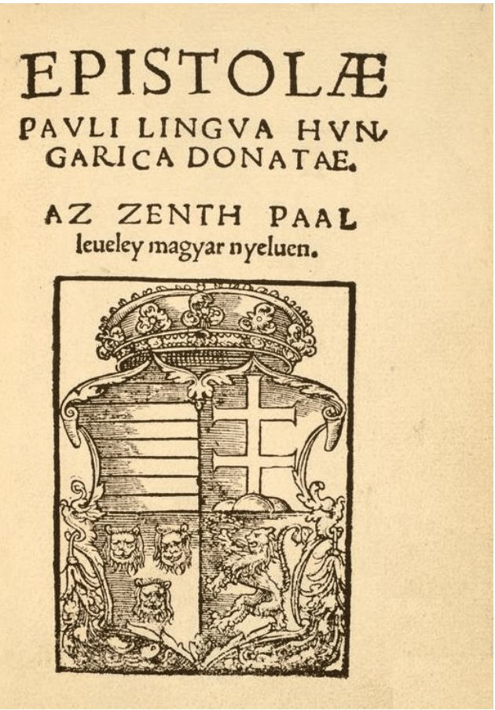
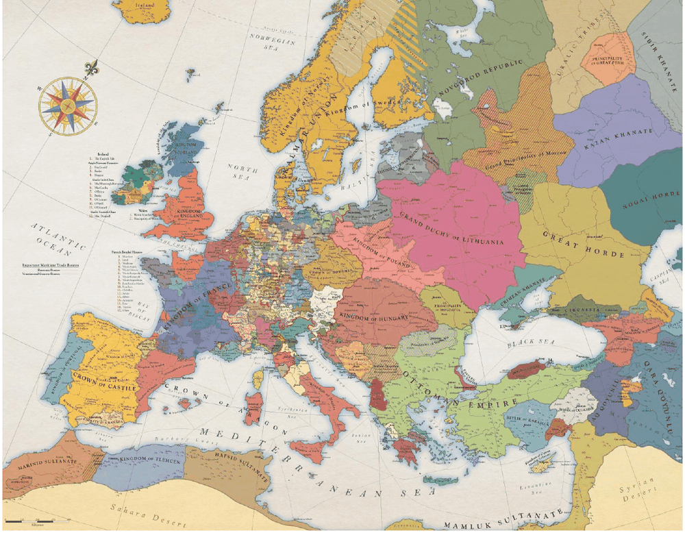
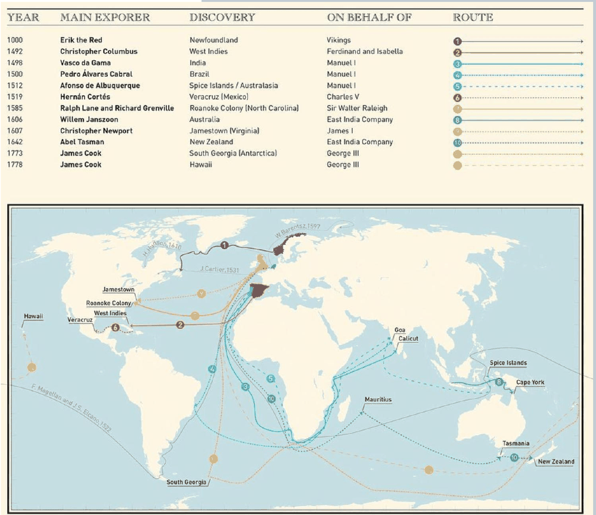
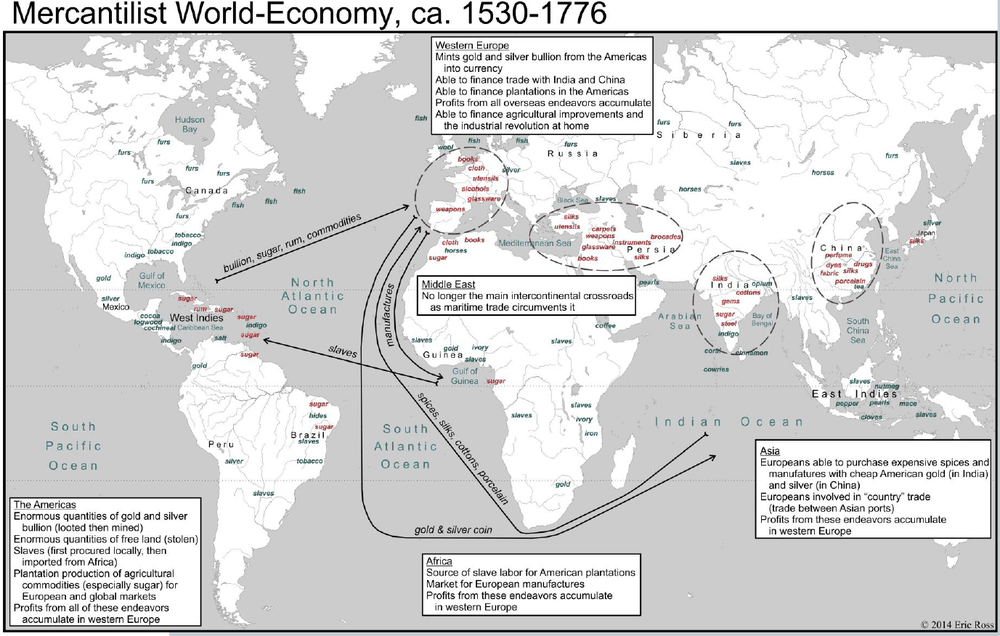
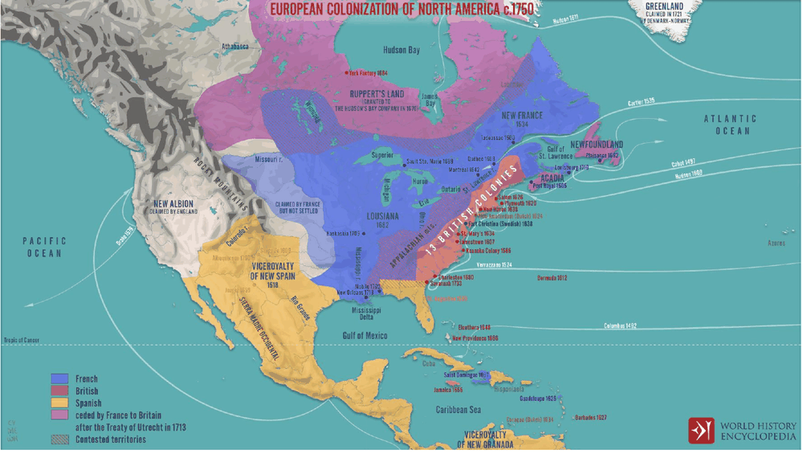
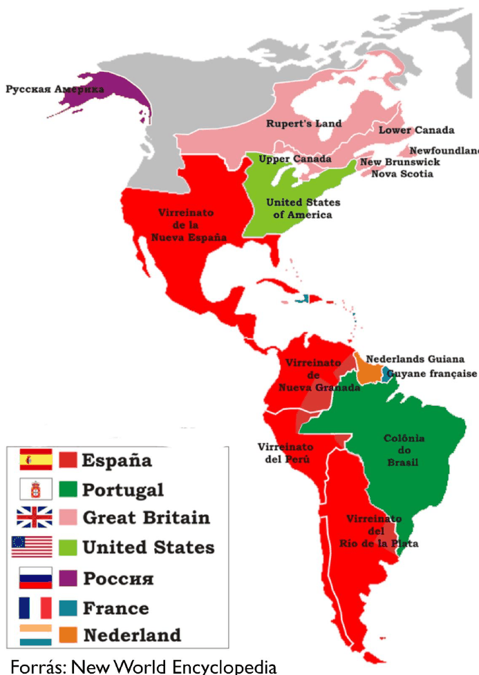
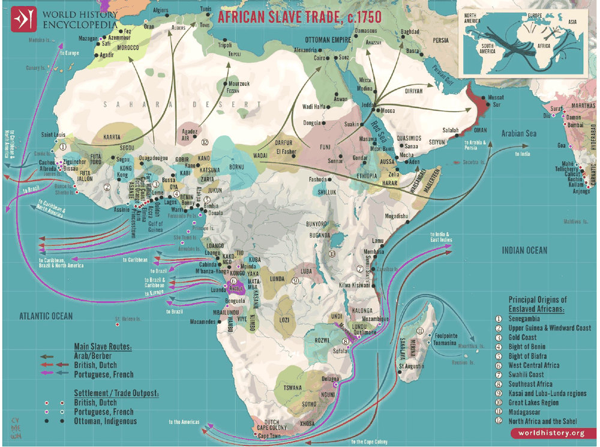

8. fejezet · diák: 134–151
Versenykényszer és Európa felemelkedése
„Az élet egy örök verseny azért, hogy a bűnöző lehessünk, és ne az áldozat.”
Bertrand Russell
1500 körül Kína népesebb, egységesebb és sok tekintetben fejlettebb volt Európánál. Háromszáz évvel később mégis Európa uralta a világ tengereit és kereskedelmét. Ez a fejezet arról szól, milyen szerepe volt ebben annak, hogy Európa szétaprózott volt – és milyen árat fizettek érte mások.
Nyitó eset: a nyomtatás és a cenzúra 134–135. dia
Johannes Gutenberg 1450-re készítette el mozgatható betűkből összeálló nyomdagépét. A technológia nagyságrendekkel csökkentette az írott tudáshoz való hozzáférés költségét, ami a társadalom gyökeres átalakulásához vezetett.
A technológia felforgató jellegét már korán érzékelték:
- az első nyomtatást cenzúrázó rendeletet épp Mainzban, Gutenberg városában adta ki Berthold von Henneberg érsek 1486-ban;
- a leghíresebb tiltás IV. Pál pápa nevéhez fűződik, aki 1559-ben kiadta a tiltott könyvek jegyzékét (Index Librorum Prohibitorum, amely hivatalosan egészen 1966-ig létezett);
- az Oszmán Birodalomban 1727-ig tilos volt arab nyelven könyvet nyomtatni;
- Kínában, ahol a nyomtatás egy korábbi technológiája már évszázadokkal Gutenberg előtt létezett, minden eszközzel akadályozták az új módszer terjedését.
A sok tiltás mellett Európában több uralkodó támogatta a könyvnyomtatást, és anyagilag is profitált belőle. A Pápai Állammal szembenálló Velence a 15. században Európa nyomtatófővárosa volt; a német nyelvterületen Nürnberg és Augsburg emelkedett ki. A 16. századi protestáns egyházak megjelenése is a nyomtatás terjedését segítette.
politikai megosztottság → ami az egyik államban tilos, a másikban szabad → a cenzúra megkerülhető → a tudás terjed
Jó példa erre az első magyar nyelvű nyomtatott könyv: Komjáti Benedek fordítása Pál apostol leveleiről 1533-ban Krakkóban jelent meg.

A fejezet kérdése: hogyan segítette Európa felemelkedését a megosztottság és a versengés – és miért hozott a gyarmatokon egyes helyeken tartós fejlődést, máshol tartós egyenlőtlenséget?
Útiterv
✏️ Gondold végig – A nyomtatás
- Miért tiltották be több helyen a könyvnyomtatást? (Mintazh 8. kapcsán)
Mintaválasz
Mert az olcsó, sokszorosított tudás fenyegette a fennálló hatalmat: a vallási és politikai tekintély az írott tudás feletti ellenőrzésen is alapult. Új, eretnek vagy lázító gondolatok terjedhettek el, amelyeket nehéz lett volna visszaszorítani.
- Miért nem tudták Európában megállítani a nyomtatás terjedését, ha Kínában és az Oszmán Birodalomban igen?
Mintaválasz
Mert Európa politikailag megosztott volt: ami a pápai államban vagy Mainzban tilos volt, azt Velencében, Nürnbergben vagy Krakkóban kinyomtathatták, és a nyomdászok, szerzők a befogadóbb államokba költözhettek. Az egységes birodalmakban egyetlen rendelet az egész területen érvényes volt.
Európa megosztottsága: verseny vagy háború 136–140. dia
Nézd meg Európa térképét 1444-ben, a várnai csata után: államok, hercegségek, városállamok és egyházi területek sokasága, folyamatosan változó határokkal.

Verseny vagy háború?
Verseny – szemben a háborúval – olyan küzdelem, ahol:
- vannak közösen elfogadott és megtartott szabályok;
- a szabályok kijelölte kereteken belül szabad döntések születnek;
- a szabályok nem kedveznek egyoldalúan egyik félnek sem.
Ilyen szabályok mellett a verseny teljesítményre ösztönöz és teljesítményt fokoz. Verseny folyhat közösségek, országok között, vállalatok között és egyének között.
A verseny hátránya, hogy növeli a jövedelmi egyenlőtlenségeket.
- Ha nem kezelik, destabilizálja a társadalmat – nő a szabályszegők száma.
- Szélsőséges egyenlőtlenség esetén a versenyben felülkerekedett elit a maga javára változtathatja meg a szabályokat – ez pedig csökkenti a versenyt (vö. járadékvadászat, 4. fejezet).
Amikor a megosztottság erőszakba fordul
A megosztottságnak sötét oldala is volt. A boszorkányperek 1300 és 1850 között ott voltak a leggyakoribbak, ahol a legerősebb volt a széttagoltság és a vallási versengés:
| Ország | Lakosság 1600-ban | Perbe fogottak | Meghaltak |
|---|---|---|---|
| Németország | 12 000 000 | 16 474 | 6 887 |
| Svájc | 1 000 000 | 9 796 | 5 691 |
| Franciaország | 18 500 000 | 4 159 | 1 663 |
| Magyarország | 1 250 000 | 1 644 | 474 |
| Belgium | 1 383 000 | 887 | 378 |
| Anglia | 3 667 750 | 1 197 | 367 |
| Norvégia | 500 000 | 863 | 280 |
| Skócia | 700 000 | 3 563 | 190 |
| Finnország | 200 000 | 710 | 115 |
| Luxemburg | 117 000 | 219 | 99 |
| Észtország | 125 000 | 205 | 65 |
| Olaszország | 12 000 000 | 604 | 60 |
| Hollandia | 1 500 000 | 369 | 46 |
| Ausztria | 2 500 000 | 83 | 13 |
| Lengyelország | 5 000 000 | 12 | 3 |
| Spanyolország | 8 500 000 | 1 949 | 1 |
| Írország | 1 043 750 | 52 | 1 |
| Svédország | 1 000 000 | 353 | 0 |
| Dánia | 700 000 | 90 | 0 |
| Észak-Írország | 206 250 | 9 | 0 |
| Csehország | 2 776 500 | 2 | 0 |
Leeson és Russ (2018) magyarázata: a boszorkányperek a katolikus és a protestáns egyház „piaci versenyének” eszközei voltak. Ahol a két egyház a hívekért versengett (a széttagolt német területeken, Svájcban), ott a perekkel mutatták meg, hogy ők védik meg a közösséget a gonosztól. Ahol egy egyház egyeduralkodó volt (Spanyolország, Itália), alig volt per.
Az egység átka és a megosztottság áldása
Kína, 1500 körül – kb. 125 millió lakos
- Egyetlen birodalom (Ming-dinasztia), amelyet erős hivatalnoksereg (mandarinok) irányít szigorú bürokratikus rendben.
- A hivatalnokokat többszintű, szigorú vizsgákon választják ki; az első feljegyzés ezekről több mint 2000 éves.
- A fontos verseny ezeken a vizsgákon folyik: az első körben a jelentkezők több mint 90%-a elbukik.
Európa, 1500 körül – kb. 90 millió lakos
- Rendkívül megosztott: az 1500-as években kb. 500 független államegység (200 évvel korábban még kb. 1000).
- Szinte folyamatos háborúskodás: 1500 és 1799 között Spanyolország az évek 81%-ában, Anglia 53%-ában, Franciaország 52%-ában viselt hadat.
Az állítás: Kína egysége átok volt, mert a központi hatalom bármit betilthatott, és a tehetségesek energiája a hivatalnoki vizsgákra irányult. Európa megosztottsága áldás volt, mert az államok versengtek egymással – a gazdaságban, a tudományban és a hadviselésben is. Az állítás vitatott: a megosztottság rengeteg háborút és szenvedést is hozott.
A megosztottság következményei
- Az intézmények sokszínűsége és egyfajta versenye: a politikai intézmények széles spektruma és a gazdasági intézmények változatos formái. Ha egy megoldás valahol beválik, a többiek átvehetik.
- Bevételmaximalizáló kényszer: a háborúkhoz sok adó kell → az uralkodók érdekeltek a gazdasági tevékenység fokozásában → támogatják a magánkezdeményezést → versenyhelyzet a gazdaságban is.
- A „nagy felfedezések” Kínában uralkodói ambíció eredményei voltak (Cseng Ho flottáját egy rendelettel le lehetett állítani), Európában viszont üzleti vállalkozások.
sok versengő állam → háborúk → adóigény → az uralkodó támogatja a gazdaságot és a kereskedelmet → növekedés
✏️ Gondold végig – Megosztottság
- Miben különbözik a verseny a háborútól, és miért ösztönöz a verseny teljesítményre?
Mintaválasz
A versenyben közösen elfogadott, betartott és senkinek sem kedvező szabályok vannak, amelyeken belül a felek szabadon döntenek. Így a siker a teljesítményen múlik, nem az erőszakon – ezért éri meg jobban teljesíteni. A háborúban nincsenek ilyen szabályok.
- Miért segítette a sok háború paradox módon Európa gazdasági fejlődését?
Mintaválasz
Mert a háborúhoz adóbevétel kellett, ezért az uralkodók érdekeltek lettek a gazdaság erősítésében: támogatták a kereskedelmet, a magánkezdeményezést, a vállalkozásokat. Ráadásul a versengő államok egymástól is tanultak, és átvették a beválló intézményeket.
- Mit mutatnak a boszorkányperek a megosztottság árnyoldaláról?
Mintaválasz
Hogy a versengés erőszakba is fordulhatott: a vallási és politikai versengés a széttagolt területeken (német államok, Svájc) üldözéshez, perekhez és kivégzésekhez vezetett, míg a központosítottabb országokban (Spanyolország, Itália) alig volt per.
A felfedezők és az „új” kereskedelem 141–143. dia
Miért indultak útnak az európaiak? Az arabok és a törökök miatt megváltozott a geopolitikai helyzet a mediterrán–levantei kereskedelemben: a régi utak drágák és bizonytalanok lettek, ezért újakat kerestek. Az eredmény néhány évtized alatt átrajzolta a világ térképét:
| Év | Esemény | Felfedező |
|---|---|---|
| 1488 | a Jóreménység foka | Bartolomeu Dias |
| 1492 | Amerika | Kolumbusz Kristóf |
| 1494 | tordesillasi szerződés: a spanyol és a portugál érdekszféra felosztása | – |
| 1498 | tengeri út Indiába | Vasco da Gama |
| 1519–1522 | a Föld körbehajózása | Magellán (expedíciója) |
A következő évszázadokban a felfedezők sora folytatódott – portugálok, spanyolok, angolok, hollandok és franciák térképezték fel Brazíliát, a Fűszer-szigeteket, Észak-Amerika partjait, Ausztráliát és Új-Zélandot, egészen James Cook 18. századi útjaiig. A felfedezők többsége egy uralkodó vagy egy kereskedelmi társaság (pl. a Kelet-indiai Társaság) megbízásából hajózott.

Az utak nyomán kialakult az „új” kereskedelem, a merkantilista világgazdaság (kb. 1530–1776). Hasonlítsd össze a 2. fejezet „régi”, 1490-es térképével: ott Európa a perem volt, itt már a középpont.

Ki mit adott a merkantilista világgazdaságban? (a térkép magyarázatai alapján)
- Amerika: óriási mennyiségű arany és ezüst, ültetvényes termékek (cukor, dohány, gyapot) – kényszermunkával.
- Afrika: rabszolgák az amerikai ültetvényekre; piac az európai iparcikkeknek.
- Ázsia: fűszer, selyem, tea, porcelán – amit az európaiak főleg amerikai ezüsttel fizettek meg.
- Nyugat-Európa: az amerikai nemesfémből vásárolt Ázsiában, az ültetvényekből és a kereskedelemből felhalmozott haszon pedig a pénzügyi és később az ipari forradalmat is táplálta.
✏️ Gondold végig – A felfedezők
- Miért keresett új kereskedelmi utakat Európa a 15. században?
Mintaválasz
Mert az arabok és a törökök miatt megváltozott a geopolitikai helyzet a mediterrán–levantei kereskedelemben: a keleti áruk útja drága és bizonytalan lett. Aki közvetlen tengeri utat talál Ázsiába, kikerülheti a közvetítőket, és óriási haszonra tehet szert.
- Miben különböztek az európai felfedezések Cseng Ho kínai expedícióitól?
Mintaválasz
Kínában a felfedezőutak az uralkodó ambícióját szolgálták, és egy uralkodói döntéssel le is állíthatták őket. Európában üzleti vállalkozások voltak, amelyeket a haszon hajtott, és sok versengő állam és társaság finanszírozta őket – ha az egyik felhagyott vele, a másik folytatta.
Gyarmatok: a spanyol és az angol út 144–148. dia
Az üzlet és a politika szövetsége a gyarmatosításban hihetetlenül hatékonynak bizonyult. Példa: 1602-ben megalakult a Holland Kelet-indiai Társaság – magántársaság, amely monopóliumot kapott a keleti kereskedelemre, cserébe katonai feladatokat is ellátott a holland gyarmatokon.
A két Amerika története
- 1500 körül Közép- és Dél-Amerika fejlett (azték és inka birodalom), Észak-Amerika rendkívül fejletlen volt.
- A spanyolok erősebbek voltak az angoloknál, ezért kisajátíthatták a gazdag részeket – az angoloknak csak a kevésbé értékes falatok jutottak.
- A telepesek új intézményeket honosítottak meg.
- 2000-ben Észak-Amerika a világ legfejlettebb régiója, Latin-Amerika viszont a közepes fejlettséget is alig éri el.
A fordulat oka a vitatott, de széles körben elfogadott magyarázat szerint az intézmények különbsége.
Részletesebben: mit jelent, hogy „az intézmények különbsége”, és milyen elméletek vannak?
Mit értünk intézményen?
Douglass North (Nobel-díj, 1993) meghatározása szerint az intézmények a „játékszabályok” egy társadalomban: azok a formális szabályok (alkotmány, törvények, tulajdonjog, szerződések) és informális normák (szokások, erkölcs), amelyek keretbe foglalják, mit tehetnek az emberek, és ami ugyanilyen fontos: hogyan kényszerítik ki ezeket. Nem az számít tehát, mi van a földben, hanem az, hogy kié lesz a haszon, ha valaki dolgozik, befektet vagy újít.
Acemoglu és Robinson (Miért buknak el a nemzetek?, 2012) két típust különböztet meg:
- befogadó (inkluzív) intézmények: biztos tulajdonjog széles rétegeknek, pártatlan jog, szabad piacra lépés, a hatalom korlátozása – mindenki számára megéri tanulni, befektetni, vállalkozni;
- kizsákmányoló (extraktív) intézmények: egy szűk elit vonja el a többség munkájának és vagyonának hasznát (kényszermunka, monopóliumok, önkényes adók) – a többségnek nem éri meg erőfeszítést tenni.
Az intézmények önfenntartók: aki a kizsákmányoló rendszerből meggazdagszik, az politikai hatalmát arra használja, hogy fenntartsa azt. Ezért él tovább a gyarmati örökség évszázadokkal a függetlenné válás után is.
1. A telepesek halálozása – Acemoglu, Johnson és Robinson (2001)
Az intézmények hatását nehéz kimutatni, mert lehet, hogy éppen a gazdag országok engedhetik meg maguknak a jó intézményeket (fordított ok-okozat). AJR ezért egy „természetes kísérletet” keresett: azt, hogy a gyarmatosítók túlélték-e az adott helyet. Lánc:
telepesek halálozása (malária, sárgaláz) → letelepedtek-e tömegesen az európaiak → milyen intézményeket hoztak létre → ezek tovább élnek → mai jövedelem
Ahol az európaiak tömegesen letelepedtek (USA, Kanada, Ausztrália, Új-Zéland), maguknak építettek jogvédő intézményeket. Ahol sokan meghaltak, ott csak kifosztó „állomásokat” tartottak fenn kevés európaival. Ehhez kapcsolódik a lent kifejtett „sors fordulata” érv is.
2. Az erőforrás-ellátottság és az egyenlőtlenség – Engerman és Sokoloff
Stanley Engerman és Kenneth Sokoloff (1997-től) szerint a földrajz az egyenlőtlenségen keresztül hatott az intézményekre:
- A Karib-térségben és Brazíliában a talaj és az éghajlat a cukornádnak kedvezett, amelyet nagy ültetvényeken, rabszolgamunkával érte meg termelni. Mexikóban és Peruban ezüstbányák és nagy, munkára kényszeríthető őslakos népesség volt. Mindkettő szélsőséges vagyoni egyenlőtlenséghez vezetett.
- Észak-Amerika északi részén búzát és kukoricát családi gazdaságokban termeltek, ahol a méretgazdaságosság kicsi – így viszonylag egyenlő földbirtokszerkezet alakult ki.
- Az elit aztán úgy alakította a szabályokat, hogy megtartsa előnyét: Latin-Amerikában sokáig szűk maradt a választójog (vagyoni és írni-olvasni tudási cenzus), lassan terjedt az állami iskoláztatás, és a földet a nagybirtokosok kapták. Az USA északi államaiban korán kiszélesedett a választójog, ingyenes népiskolák épültek, és olcsó földhöz lehetett jutni (Homestead Act, 1862).
Ezt mutatja az USA déli rabszolgatartó államainak példája is: ott az ültetvényes gazdaság hasonló, egyenlőtlenebb intézményeket hozott létre, mint Latin-Amerikában.
3. A gyarmatosító öröksége – angol és spanyol hagyomány
Más szerzők (például North, illetve Niall Ferguson) a gyarmatosító ország saját intézményeire mutatnak rá: a telepesek azt vitték magukkal, amit otthon ismertek.
- Anglia a 17. századra parlamentáris irányba fordult (dicsőséges forradalom, 1688). A gyarmatok saját gyűlésekkel rendelkeztek, és a közjog (common law) hagyománya a tulajdon és a szerződés védelmét helyezte előtérbe.
- Spanyolország központosított, abszolutista monarchia volt. A gyarmati kereskedelmet állami monopóliumok szabályozták (minden áru a sevillai, később cádizi kikötőn át mehetett), a hivatalokat sokszor áruba bocsátották, és a döntések Madridban születtek.
- A „jogi eredet” irodalom (La Porta és szerzőtársai) szerint a közjogi országokban ma is erősebb a befektetők védelme és fejlettebb a pénzügyi rendszer, mint a francia–spanyol polgári jogi hagyományban.
4. Mi történt a függetlenség után?
John Coatsworth és mások szerint a lemaradás nagy része 1800 és 1870 között keletkezett. A spanyol gyarmatok függetlenné válása után évtizedekig tartó polgárháborúk, katonai diktátorok (caudillók), határviták és államcsődök következtek, miközben az USA egységes piacot és stabil alkotmányos rendet épített. A gyarmati örökség tehát a 19. századi politikai instabilitáson keresztül is hatott.
A versengő (nem intézményi) magyarázatok
- Földrajz közvetlenül (Jeffrey Sachs, Jared Diamond): a trópusi betegségek, a gyengébb talaj és a nehéz közlekedés önmagukban is visszafogják a termelékenységet.
- Kultúra és vallás (Max Weber, David Landes): a protestáns munkamorál és individualizmus szemben a katolikus, hierarchikus hagyománnyal (10. fejezet).
- Humán tőke (Glaeser és szerzőtársai, 2004): a telepesek nem elsősorban intézményeket, hanem tudást és iskolázottságot vittek magukkal, és ez okozza a különbséget.
- Az AJR-tanulmány halálozási adatait is bírálták (Albouy, 2012), ami gyengíti a bizonyítás egyik pillérét.
Egy beszédes példa: Nogales
Acemoglu és Robinson könyve egy határvárossal kezdődik. Nogalest kettévágja az USA és Mexikó határa: a két oldalon azonos az éghajlat, a földrajz, sokban a kultúra és a lakosság származása is. Az arizonai oldalon mégis sokkal magasabbak a jövedelmek, jobb az egészségügy, kiszámíthatóbb a közbiztonság és a hivatalok működése. A szerzők szerint az egyetlen lényeges különbség: melyik ország intézményei alatt élnek.
Miért „vitatott, de széles körben elfogadott”? Ma a legtöbb kutató egyetért abban, hogy az intézmények kulcsszerepet játszanak. A vita inkább arról szól, hogy mi alakította az intézményeket (földrajz, egyenlőtlenség, a gyarmatosító hagyománya), és hogy a földrajz, a kultúra vagy a humán tőke mennyit magyaráz közvetlenül. A legelterjedtebb álláspont szerint a földrajz főként az intézményeken keresztül hatott.

A spanyolok útja
- Konkvisztádorok: Hernando Cortés (kiugrott joghallgató) meghódította az azték fővárost, és megalapozta a mexikói spanyol uralmat. Francisco Pizarro (disznópásztor) 180 emberrel térdre kényszerítette az Inka Birodalmat, és megalapította Limát.
- Latin-Amerika rendkívül gazdag volt aranyban és ezüstben.
- Tulajdonosi szerkezet: a föld a királyé, a tartós használat jogát a telepesek egy kisebbsége kapta meg (encomienda). Az ott élő indiánok fölött a földesúr rendelkezett: ingyenmunkával művelték a földeket és dolgoztak a bányákban (mita).
- 1820-ban Venezuelában a föld szinte teljesen az 50 ezres kreol lakosság (a népesség 1,1%-a) tulajdonában volt; 1952-ben Peruban a lakosság 2%-a birtokolta a földterület 69%-át. Délen (Argentína, Chile) kevésbé volt riasztó a helyzet.
Az angol út
- Az első telepesek a 17. századtól szerződéssel érkeztek: vállalták, hogy 5 évig dolgoznak a vállalkozóknak. A nehéz viszonyok miatt hamar kiderült, hogy ez nem elég vonzó.
- 1669: Barbadosi proklamáció – Karolina alkotmánya (Locke): a földterület legalább 3/5-ét fel kell osztani a telepesek között; minden felnőtt férfi érkezéskor 40 hektár földet kap.
- Tulajdonjog: 1900-ban a vidéki amerikaiak 75%-ának volt földtulajdona, Kanadában 87%-uknak.
spanyol út: gazdag terület + erős hódító → a föld és a munka egy szűk elité (encomienda, mita) → kizsákmányoló intézmények → tartós egyenlőtlenség
angol út: szegény terület, kevés munkás → a telepeseket földdel kell odacsábítani → széles körű tulajdon → befogadó intézmények → tartós fejlődés
Ez a „sors fordulata” (reversal of fortune) Acemoglu, Johnson és Robinson híres érve: ahol 1500-ban gazdagság és sűrű népesség volt, ott a gyarmatosítók kizsákmányoló intézményeket hoztak létre, hogy a meglévő gazdagságot és munkaerőt elvonják; ahol szegénység és ritka népesség volt, ott maguk a telepesek telepedtek le, és maguknak építettek befogadó intézményeket. Ezért fordult meg a fejlettségi sorrend (4. fejezet).
Amerika politikai térképe 1794-ben: Spanyolország uralta Közép- és Dél-Amerika nagy részét, Portugália Brazíliát, Nagy-Britannia Kanadát; az Egyesült Államok már független volt; Alaszka Oroszországé, Guyana holland és francia kézen volt.

✏️ Gondold végig – A két Amerika
- Miért lett 2000-re Észak-Amerika fejlettebb, mint Latin-Amerika, ha 1500-ban fordítva volt?
Mintaválasz
A telepesek eltérő intézményeket hoztak létre. Délen a spanyolok a gazdag, népes területeken a föld és a munkaerő kisajátítására építettek (encomienda, mita): kizsákmányoló intézmények és extrém földkoncentráció alakult ki. Északon a telepeseket földdel kellett odacsábítani, így széles körű tulajdon és befogadó intézmények jöttek létre, amelyek hosszú távon tartós növekedést hoztak.
- Hogyan kapcsolódik Karolina alkotmánya Locke gondolataihoz?
Mintaválasz
Locke maga is részt vett a megfogalmazásában: a tulajdon természetes jog, és a politikai részvétel is a tulajdonhoz kötött (a 4. fejezet szerint szavazhatott, akinek legalább 20 hektár földje volt). A földosztás így egyszerre teremtett gazdasági ösztönzőt és politikai befogadást.
A rabszolgaság 149–151. dia
- Az első rabszolgákkal működő cukorültetvényt a portugálok hozták létre Madeirán és São Tomén az 1450-es években. Amikor a felfedezések során Beninbe érkeztek, ott jól működő, évszázados rabszolgapiacokat találtak.
- 1500 és 1866 között kb. 12,5 millió rabszolgát szállítottak Afrikából Amerikába. 1492 és 1760 között az Amerikába érkezők 70%-a, 1700 és 1760 között 80%-a rabszolga volt.
- Brazíliában 1538-tól, Virginiában 1619-től jelentek meg rabszolgák.
- Az 1826-os angol–brazil szerződés a rabszolgakereskedelem leállításáról szólt – de 1850-ig még élénk volt; az USA-ban 1865-ig, Brazíliában 1888-ig létezett a rabszolgaság rendszere.
Északon (az angol gyarmatokon)
Nagyon szigorú szegregáció, „örökös” rabszolgaság.
Délen (Latin-Amerikában)
A rabszolgák megválthatták a szabadságukat; a 19. század második felére az afrikaiak többsége már szabad volt, saját földön gazdálkodott vagy bérmunkás volt. Gyakoriak voltak a vegyes házasságok – egy 1509 és 1559 közötti, 15 ezer nevet tartalmazó listán a spanyol kivándorlók 90%-a férfi volt.

A rabszolgaság gazdasági logikája a jobbágyságéhoz hasonló: ott, ahol sok föld és kevés munkaerő volt (cukor-, dohány-, gyapotültetvények), a hatalom birtokosai kényszerrel szereztek munkaerőt. A rabszolgaság a legszélsőségesebb kizsákmányoló intézmény, és hatásai – egyenlőtlenség, bizalmatlanság, szegregáció – évszázadokkal később is kimutathatók (vö. az alabamai térkép, 1. fejezet). Egyes kutatók szerint pedig a rabszolgakereskedelemből származó tőke az első ipari forradalmat is táplálta (1. fejezet).
✏️ Gondold végig – Rabszolgaság
- Miért terjedt el a rabszolgaság épp az amerikai ültetvényeken?
Mintaválasz
Mert az ültetvényes gazdálkodás (cukor, dohány, gyapot) sok kemény munkát igényelt, a föld bőséges volt, a munkaerő viszont kevés. Az ültetvényesek – akiknek a hatalom is a kezükben volt – kényszerrel, rabszolgák behozatalával oldották meg a munkaerőhiányt. Ez a jobbágyság logikájának szélsőséges változata.
- Miben különbözött a rabszolgaság Észak- és Latin-Amerikában?
Mintaválasz
Északon szigorú szegregáció és örökletes rabszolgaság volt. Délen a rabszolgák megválthatták a szabadságukat, gyakoriak voltak a vegyes házasságok (a spanyol kivándorlók 90%-a férfi volt), és a 19. század második felére az afrikaiak többsége szabad lett.
Összefoglalás: Európa felemelkedése – egy többtényezős magyarázat 151. dia
- A politikai megosztottság versenyt és menekülési lehetőséget teremthetett az újítóknak.
- Ugyanez a megosztottság háborút, üldözést és pusztítást is okozott.
- A gyarmati intézmények meghatározták, kik részesültek a növekedés hasznából, és tartós egyenlőtlenségeket hagytak hátra.
- A gyarmatokon azok az országok bizonyultak sikeresnek, ahol a telepesek befogadó politikai intézményeket honosítottak meg.
Válasz a fejezet kérdésére: a sok versengő állam miatt Európában nem lehetett mindenhol betiltani az újítást (nyomtatás, tudomány), az uralkodók a háborúk finanszírozása miatt a gazdaságot támogatták, és a felfedezések üzleti vállalkozásként folytak. Ugyanez a megosztottság háborúkat és üldözést is hozott. A gyarmatokon pedig az döntött, milyen intézményeket hoztak létre a telepesek: ahol a föld és a hatalom szűk elit kezébe került (spanyol út, rabszolgaság), ott tartós egyenlőtlenség maradt; ahol széles körű tulajdon és befogadó intézmények (angol út), ott tartós fejlődés.
Esszéhez: ha ezt látod → ezt használd
| Ha az esetben ez áll… | …akkor ezt a fogalmat / mechanizmust használd |
|---|---|
| Egy új technológiát az egyik állam betilt, a másik támogat | a megosztottság mint a cenzúra megkerülése (→) |
| Sok kis, versengő állam vagy cég | verseny vs. háború; az intézmények versenye (→) |
| Egységes, központosított birodalom, erős bürokrácia | az egység átka (Kína) (→) |
| Háborúk finanszírozása, adóverseny | bevételmaximalizáló kényszer (→) |
| Gazdag nyersanyag + szűk elit kezében a föld | spanyol út: encomienda, mita, kizsákmányoló intézmények (→) |
| Telepesek széles földtulajdonnal | angol út: befogadó intézmények (→) |
| Egy egykor gazdag térség lemarad | a két Amerika „sorsfordulata” (→) |
| Kényszermunka, rabszolgaság | szélsőséges kizsákmányoló intézmény, tartós egyenlőtlenség (→) |
| Állam és magántársaság együtt hódít és kereskedik | az üzlet és a politika szövetsége (Holland Kelet-indiai Társaság) (→) |
Kapcsolódások
- A Nyugat sikerének versengő magyarázatai – verseny és kereskedelem (1. fejezet).
- „Régi” kereskedelem, centrum és periféria (2. fejezet).
- Kizsákmányoló és befogadó intézmények; Locke és Karolina alkotmánya (4. fejezet).
- A tudomány felemelkedése Nyugaton, hanyatlása Keleten (5. fejezet).
- Rabszolgakereskedelemből származó tőke mint az ipari forradalom egyik vitatott oka (1. fejezet).
- Fogyasztói társadalom – az új áruk (cukor, gyapot) tömegfogyasztása (9. fejezet).
- A kínai vizsgarendszer és a meritokrácia (10. fejezet).
- Szintézis (15. fejezet): a verseny megújulásra kényszerít, a biztonság (önvédelem) pedig a fejlődés harmadik alapforrása.